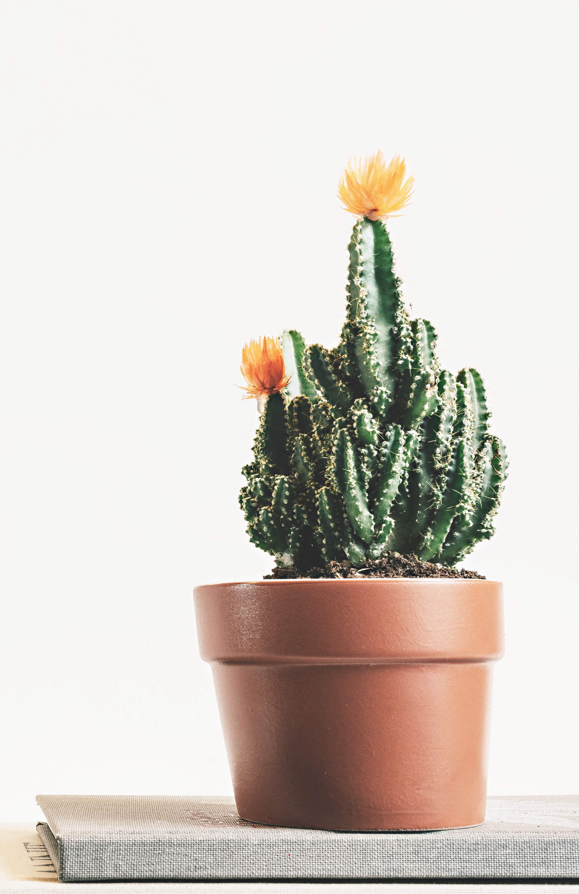

仙人掌萃取物，主要是以從葉片（pads）萃取為主，仙人掌的葉片中含有大量的水（80％左右），
另外還含有蔗糖、纖維質、維生素A、維生素C、礦物質像鈣及鉀、一些氨基酸、檸檬酸、及一些黏多醣成分，
美國印地安人常常會將仙人掌葉片切成片狀來敷臉，充當天然的肌膚保濕與防曬產品，所以從仙人掌葉片萃取
出的成分可以作為肌膚舒緩、保濕成分。
仙人掌的果實中除了含有一些醣類成分以外，還含有豐富的維生素C以及兩種特殊的抗氧化成分betanin and
indicaxanthin，因此如果產品中的仙人掌萃取是來自於仙人掌的果實的話，具有保濕效果以及不錯的抗氧化效果。
仙人掌的花裡頭以醣類成分為主，萃取物的效果上主要是作為保濕劑。
仙人掌的種子所萃取出的仙人掌油，裡頭含有不少的不飽和脂肪酸，除了保濕鎖水的效果性外，
對於肌膚損傷的修復亦有相當的助益。
About cactus extracts, the main is to extract from the leaves.
The leaves of the cactus contain a lot of water (about 80%), and also contain sucrose,
fiber, vitamin A, vitamin C, and minerals. Calcium and potassium, some amino acids,
citric acid, and some mucopolysaccharides, American Indians often cut cactus leaves into
flakes to serve as a natural skin moisturizer and sunscreen product, so they are extracted from
cactus leaves. Ingredients can be used as a soothing and moisturizing ingredient.
The cactus fruit is rich in vitamin C and two special antioxidants,
betanin and indicaxanthin, if the cactus extract in the product comes from the fruit of the cactus,
it has a moisturizing effect. Good anti-oxidation effect.
The flower head of the cactus is mainly composed of sugar components, and the effect of the extract is mainly used as a moisturizer.
The cactus oil extracted from the seeds of the cactus contains a lot of unsaturated fatty acids, in addition to the effect of moisturizing and water-locking.
It is also very helpful for the repair of skin damage.
預約商品付款方式一律以官網金流或轉帳方式。
匯款完成即完成預約，取消訂單，因影響後續
檔期安排，恕不退還檔期租金作為違約賠償。
收到預約單24小時內完成匯款，若未匯款完成，
將視同取消訂單將讓給下一位等候的媽咪。
賣場出貨事宜會以一對一確認的預約資訊部分為主，
請確認所留下的連絡方式是否正確，能盡快將租借
物品送達到您手中。
自行歸還至公司、郵寄或親送至鄰近物流公司
收到用品後，乙方請務必保留原包裝紙箱、緩
衝包材與說明書，請使用原箱寄回歸還，若不
是原箱寄回增加的運費由乙方負擔。
收到承租歸還商品檢查無誤後，安排每週三(遇假日順延)
統一完成轉帳退還押金。
cactus_tw@service.com